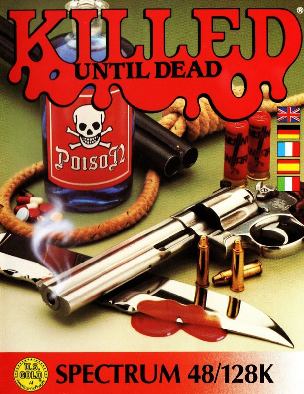
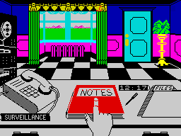
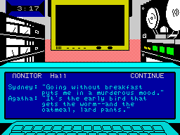

Killed Until Dead


{kind=link}

| Publisher: | US Gold |
| Price: | £8.99 |
| Year: | 1987 |
| Source: | CRASH, Issue 42 |

At the Gargoyle Hotel, the world’s greatest mystery writers — Mike Stammer, Agatha Maypole, Lord Peter Flimsey, Claudia Von Bulow, Sydney Meanstreet — are having a reunion, dancing to Suspicious Minds.
But one of them is a murderer and one is the victim.

desk, tape recorder on pause, telephone
poised, files to hand and notepad at
the ready. Sleuths have never had it
so comfortable!
Hercule Holmes is hot on the case — he must identify both before a talented ’tec is done to death. HH must also discover what the murder weapon is, find the scene of the potential crime, and unravel a motive. He has 12 hours for this herculean task, and all the time the clock sprints toward midnight...
Holmes has a choice of mysteries to test his skills. In each he’s based at a desk where he can choose to examine files on each suspect, organise break-ins, tape conversations, monitor meetings and interrogate suspects.
Each profile contains information on the hotel’s famous guests, which might indicate connections and antagonisms between them — and motives for murder.
Holmes can break into the guests’ rooms when they’re away and find valuable clues — if you can answer trivia questions about famous fictional detectives and thrillers. Wrong responses bring a security guard to the door.

A monitor screen allows you to view different parts of the hotel — bedrooms, library, foyer. You can set up a tape recorder to eavesdrop on meetings; three preset systems allow it to record in different places at specified times.
And Holmes can interrogate suspects, but first he has to find clues — otherwise the suspect refuses to cooperate. He can ask questions about intended victims, weaponry and murder scenes, and the suspects give weak or strong replies. Their expression onscreen changes as they grow more nervous...
Notes on phone conversations, break-ins, monitored meetings and anonymous phone calls can be reviewed.
Once satisfied with the investigation, you can accuse a suspect. But even if you’re correct, your deerstalkered detective must still know what weapon is to be used, where the crime is to take place, and what the motive is. If you don’t, Holmes’s last case will be a wooden box...
CRITICISM
“‘Elementary, my dear Watson’? This very good game is anything but elementary. The detective idea isn’t new, but Killed Until Dead is varied and often highly amusing. I especially enjoy the expressions on the faces of suspects. Graphically the game is excellent — the sprites are large and well-defined — and sound is put to good use. When you phone suspects, a different tune plays for each! Definitely for budding Perry Masons and Philip Marlows.”
MARK
“I loved my first game of Killed Until Dead. It has much more then pretty graphics and superb little tunes — there IS some real depth, with all the elements of the great murder mysteries and a superb atmosphere. The mysteries area mixture of very simple logical puzzles and some real mind-benders for the professionals. If you’re one of those people who devour all the Agatha Christie books and films then this is a must — and great value, with loads of different mysteries.”
PAUL
“There’s a touch of The Fourth Protocol to Killed Until Dead — the former provided such armchair excitement for the sleuth, and US Gold’s great offering does the same with so much humour as well. The packaging has C64 screen shots, predictably more colourful than the Spectrum’s — but even on the Spectrum the graphics are excellent. Along with the clever use of sound, they make Killed Until Dead highly enjoyable. The puzzles and the different playing options add to it addictive qualities, too. Don’t miss it.”
RICKY
COMMENTS
| Control keys: | Definable, four directions and ENTER required; functions accessed by cursor and highlighted icons |
| Joystick: | Kempston, Interface 2, Cursor |
| Use of colour: | Excellent |
| Graphics: | Superb animation is an integral part of the investigations |
| Sound: | Excellently used to highlight the characters |
| Skill levels: | Four |
| General rating: | Involved and highly entertaining sleuth game with sufficient depth to keep you playing for ages |
| Presentation: | 92% |
| Graphics: | 91% |
| Playability: | 95% |
| Addictive qualities: | 94% |
| Overall: | 93% |